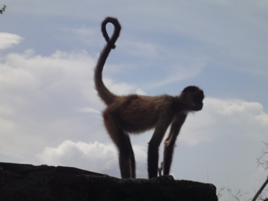

Ometepe Island in Nicaragua is home to a mountain formed from volcanic eruptions known as Volcán Maderas. Trekking through the rainforest regrowth is like stepping back in time. When hiking up the mountain, the forest feels untouched and connected to the past - a Mastodon grazing in the tree tops would not seem out of place here. At the top of the mountain is a crater lake, hidden away by forest. It is easy to imagine a group of ancient peoples tucked away in the beauty of the forest. Indeed, at the base of the mountain are hundreds of petroglyph works from a past civilization. There are symbols depicting crude jaguars and elegant butterflies, meandering spirals and human figures. You can feel the etchings, giving one a sense of connection with the hands that carved pieces of their world into the rock.
The island is home to a large Capuchin monkey population that demands protection. However, what should drive concerns for protection and conservation of the island? The monkey population? The ties to ancient peoples? Or the emotional, personal connection and imaginative awakening one experiences when hiking up Volcán Maderas? A scientific approach to viewing the island would focus on determining the population status of Capuchin monkeys over time. Whereas a more creative approach, focusing on imagination, would emphasize the inherent beauty of the island and ties to the ancient inhabitants. The scientific approach aims to push for conservation efforts by relaying the data about the monkey population while the imaginative approach encourages conservation ideals by appealing to the beauty of nature and the connections we make as human beings. However, could a combination of both facts and imaginative immersion elicit the best model for promoting conservation efforts? Concern for the island can be generated through an emotional connection with an ancient people, appreciation of the beauty of the natural flora and fauna, as well as an understanding of the scientific importance of the island’s inhabitants. This makes the imaginative view a reasonable approach to compel people to support and develop conservation efforts on the island. However, how do we implement this imaginative translation of science?

“The trophy-recreationist has peculiarities that contribute in subtle ways to his own undoing. To enjoy he must possess, invade, appropriate. Hence the wilderness that he cannot personally see has no value to him. Hence, the universal assumption that an unused hinterland is rendering no service to society. To those devoid of imagination a blank place on the map is a useless waste; to others, the most valuable part”. (1) – Aldo Leopold
There is often a question of whether or not science should be purely evidence based or should utilize more creative outlets for learning, discussion and writing. For Aldo Leopold, a professor at the University of Wisconsin, widely considered the father of wildlife management, there is a need for science where nature is concerned, but there is also need for experience and imagination. According to Helen Longino, a modern American philosopher of science, there are constitutive as well as contextual values in science. (2) Constitutive values are those integral to and backed by scientific inquiry, while contextual values are unrelated to a scientific understanding.
This discussion of the dichotomy between scientific reasoning and creativity seems to downplay the importance of imagination in the scientific method. Although scientists exhibit much constitutive creativity in designing experiments and studies, the wonder and excitement involved is often lost in publication. When was the last time anyone wanted to read a research paper to a child as a bedtime story, bring a scientific work to a book club, or was so captivated by the words on the page that they could not set the work down? Yannis Hadzigeorgiou, a professor of curriculum theory at the University of the Aegean in Mytliene, Lesbos explains that imagination brings order to sense experience and deductive reasoning, and that imagination has a centrality in science, not just an internality, when imagining experiments. (3) He notes that while scientists value creativity in their works, they often do not exploit the sense of wonder and awe that imagination can add to scientific publications. (3) By adding a little imaginative stimulation, scientific works become much more accessible to the public and can foster a sense of care and urgency toward the topics at hand. While there is a need for the traditional style of scientific writing to ensure that experiments are replicable and verifiable, scientists would likely benefit from engaging in additional forms of writing and communication that incorporate a more imaginative tone. This can go a long way in informing and engaging the general public, which is important both for the acquisition of new knowledge and societal progress. The articles posted on The Dish on Science and other blogs, magazines, and podcasts like it are a great way to share an imaginative view of science. As a reader of our website, you are proof that this method is effective at sharing science with the general public.
This type of imaginative translation need not only apply to science articles. Applying creative techniques to science education in a school setting is a way to effectively inform and engage a younger audience.
In a study done by Hadzigeorgiou et. al., researchers looked at how a romantic teaching style, emphasizing the teaching of scientific content through stories, would affect different aspects of learning in a school curriculum. (4) The researchers used a story describing Nikola Tesla’s discovery and application of alternating current to teach students between the ages of fourteen and seventeen about electricity. They compared the students’ retention of the material to another group of students taught with typical direct instruction. The researchers wanted to know if teaching with the Tesla story helped students to learn specific scientific content more effectively than direct teaching and whether students taught with the Tesla story developed a romantic, emotional understanding of the science content. They found that significantly more students in the Tesla group kept journal entries, an optional activity. This finding suggests that learning through story kept the students more engaged and motivated to give extra thought about the material. (4) On a test given about alternating current, the Tesla group scored significantly higher than the direct teaching group. These findings suggest that a romantic teaching framework encouraged emotional involvement with science and facilitated learning. (4) A storytelling approach enriched the learning and instruction by stimulating imagination and curiosity. (4) This study provides tangible evidence that imagination and emotion are important in the understanding of science.
In another example, a researcher from Roger Williams University developed a learning activity template to teach biodiversity lessons to high school students. (5) The researcher developed a role playing activity where students had to “become” an organism in an ecological web. The students interacted with one another and had to determine the identity of other students to eventually build an ecological web with the knowledge they gained from the exercise. Through this activity, the students were better able to understand the multitude of species in different ecosystems and their complex interactions. (5) Not only could the students build an accurate ecological web, they could, and - were more excited to - answer questions about their systems. (5) While these examples of interactive, imaginative teaching only apply to the settings in which they were conducted, they are an encouraging implementation of the employment of imagination as a centrality in science.
In conclusion, to have an effective system in which the public is informed and active in conservation biology, there needs to be a release from the “either or” type thinking about the place of creativity in science. There should be a system in place where people are encouraged to learn facts AND stimulate their imaginations, where they are given information but in a way that is memorable and engaging, and where multiple disciplines work together. By implementing creative pieces in science learning and writing, stories, and journaling, the public would be much more informed and engaged in the future of conservation biology, leading to increased environmental action.
References
Leopold, A. 1949. "Conservation Esthetic ." In A Sand County Almanac: And Sketches Here and There, by Aldo Leopold, 176. Oxford University Press.
Longino, H. 1990. Science as Social Knowledge: Values and Objectivity in Scientific Inquiry. Princeton University Press.
Hadzigeorgiou, Y. 2014. Imagination and Learning Science. Encyclopedia of Science Education, 1-4.
Hadzigeorgiou, Y., Klassen, S. & Klassen, C.F. 2012. Encouraging a “Romantic Understanding” of Science: The Effect of the Nikola Tesla Story. Science and Education, 1111-1138.
Byrne, L.B. 2013. An in-class role-playing activity to foster discussion and deeper understanding of biodiversity and ecological webs. EcoEd Digital Library.